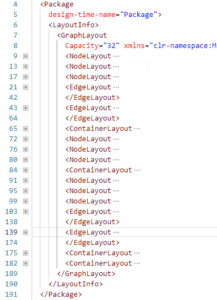
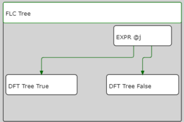

The post is a second part of the series. In the previous one, I created an SVG image of the simple SSIS package, but when I tried to draw something advanced (upper image below) I got something far from expected (lower image below). This time I’ll fix it.
The sequence problem
The main issue is with the alignment of the elements in the Sequence object (no matter if it’s the default one, the ForEachLoop or the ForLoop). Let’s take a look at the Sequences.xml file. Here are the first three <ContainerLayout> elements and the layout of the package:
<ContainerLayout HeaderHeight=“43” IsExpanded=“True” PanelSize=“205,55” Size=“205,98” Id=“Package\SEQC MAIN\SEQC 01\SEQC 011\SEQC 0111” TopLeft=“5.5,5.5”/>
<ContainerLayout HeaderHeight=“43” IsExpanded=“True” PanelSize=“216,158” Size=“216,202” Id=“Package\SEQC MAIN\SEQC 01\SEQC 011” TopLeft=“5.50000000000003,5.5”/>
<ContainerLayout HeaderHeight=“43” IsExpanded=“True” PanelSize=“227,262” Size=“227,306” Id=“Package\SEQC MAIN\SEQC 01” TopLeft=“5.50000000000006,5.49999999999989”/>
All of them have (almost) the same values of the TopLeft attribute - 5.5,5.5. They cannot be drawn in the same place, so that means that each sequence object - or better, each container - starts its own coordinates system (with the Package being the outermost container). I need to know which elements belong to which container. Challenge accepted.
The analysis
 To make things harder, the layout of the sequences and tasks is not some nested XML structure. All of the elements have the same parent - <GraphLayout>, meaning all of them are at the same tree level. Also - there is no attribute showing where a particular object belongs. Almost. In the example with the sequences, I see two regularities:
- the outer container is placed later in the XML, than the inner container
- the
@Idattributes show the nesting of the objects
Getting further with the Sequences.xml example I can see, that the first three elements have the identifiers:
Id="Package\SEQC MAIN\SEQC 01\SEQC 011\SEQC 0111"Id="Package\SEQC MAIN\SEQC 01\SEQC 011"Id="Package\SEQC MAIN\SEQC 01"
At the end of the file, there’s also anId="Package\SEQC MAIN" element, that wraps everything. These four elements create a hierarchy of the containers I want to draw. First - the SEQC MAIN, then SEQC 01, SEQC 011, and SEQC 0111 (I skip SEQC 02 for a moment).
SEQC MAIN has the @TopLeft coordinates set to 5.5, 5.5, which means a bit more than 5 pixels from the upper left corner of the package canvas. Then SEQC 01 also has @TopLeft="5.5,5.5" coordinates but within the SEQC MAIN container. It means that to draw the SEQC 01 I have to move to the X coordinate 11 (5.5 from SEQC MAIN + 5.5 from SEQC 01), and the Y coordinate to - wait, not 11. The Y coordinate must also include the calculation of the @HeaderHeight attribute, so I move to 54 (5.5 from @SEQC MAIN + 5.5 from @SEQC 01 + 43 from SEQC MAIN/@HeaderHeight). So the calculated coordinates are (11, 54).
Following the pattern:
SEQC 011has its start at16.5,102.5from the upper left corner of the package canvas:- X = 5.5 (
SEQC MAIN/@TopLeft) + 5.5 (@SEQC 01/@TopLeft) + 5.5 (@SEQC 011/@TopLeft) = 16.5, - Y = 5.5 (
SEQC MAIN/@TopLeft) + 5.5 (@SEQC 01/@TopLeft) + 5.5 (SEQC 011/@TopLeft) + 43 (SEQC MAIN/@HeaderHeight) + 43 (SEQC 01/@HeaderHeight) = 102.5
- X = 5.5 (
SEQC 0111has its start at22,151- X = 5.5 (
SEQC MAIN/@TopLeft) + 5.5 (SEQC 01/@TopLeft) + 5.5 (SEQC 011/@TopLeft) + 5.5 (SEQC 0111/@TopLeft) = 22, - Y = 5.5 (
SEQC MAIN/@TopLeft) + 5.5 (SEQC 01/@TopLeft) + 5.5 (SEQC 011/@TopLeft) + 5.5 (SEQC 0111/@TopLeft) + 43 (SEQC MAIN/@HeaderHeight) + 43 (SEQC 01/@HeaderHeight) + 43 (SEQC 011/@HeaderHeight) = 151
- X = 5.5 (
Great. I know how it should look like using the paper, the pencil, and the head. Now I have to explain all of it to the computer.
Find all the outer nodes
The biggest challenge for me was to find all the ancestor nodes, based on the @Id attribute of the current node. For example - when I work with the Id="Package\SEQC MAIN\SEQC 01\SEQC 011\SEQC 0111", I need to find the nodes with:
Id="Package\SEQC MAIN\SEQC 01\SEQC 011"Id="Package\SEQC MAIN\SEQC 01"Id="Package\SEQC MAIN"
Then I take the @TopLeft and @HeaderHeight attributes from all of them, to calculate the offset of the upper-left corner for the element I’m currently working with. The trick is to keep breathing to work with sequences. However, first - I have to add processing of the sequences to the XSLT file:
<xsl:template match=“gl:GraphLayout”> <xsl:apply-templates select=“gl:ContainerLayout” /> <xsl:apply-templates select=“gl:NodeLayout” /> <xsl:apply-templates select=“gl:EdgeLayout” /> <xsl:apply-templates select=“gl:AnnotationLayout” /> </xsl:template>
<xsl:template match=“gl:ContainerLayout”> </xsl:template match=“gl:ContainerLayout”>
Then, inside of the gl:ContainerLayout template I calculate the tokens for the @Id of the container with the tokenize() function:
<xsl:variable name=“IdTokens” select=“tokenize(@Id, ‘\\')” />
The variable IdTokens has the sequence of the elements separated by the backslash, like for Id="Package\SEQC MAIN\SEQC 01\SEQC 011 I have the tokens: Package, SEQC MAIN, SEQC 01, SEQC 011 (in this order). You can think of it as some kind of array (but it’s not the array, it’s the sequence). Now I calculate the “subpaths” for Package\SEQC MAIN\SEQC 01\SEQC 011\SEQC 0111 and I will use the IdTokens variable. Again - I need to find the paths:
Package\SEQC MAIN\SEQC 01\SEQC 011Package\SEQC MAIN\SEQC 01Package\SEQC MAIN
I don’t need the Package path, as it does not exist. So, I need to concatenate the elements from the sequence for a few times. To be precise: that many times as I have the number of the elements in the sequence. Minus one. For this, I use XPath’s for:
<xsl:variable name=“IdPaths” select=“for $x in (2 to count($IdTokens)) return string-join(subsequence($IdTokens, 1, $x), ‘\')” />
It’s a bit hard to read at first, so I will split it to the bits and pieces using the example of Package\SEQC MAIN\SEQC 01\SEQC 011\SEQC 0111.
To concatenate the elements of the sequence I use the string-join() function. To point out the elements to concatenate I use the subsequence() function. It takes the source sequence (here - the $IdTokens variable) from the starting position to the ending position. To get the subpath Package\SEQC MAIN\SEQC 01 I need to get the first three elements - subsequence($IdTokens, 1, 3) - and concatenate them with a backslash - string-join(subsequence($IdTokens, 1, 3), '\'). To get the subpath Package\SEQC MAIN I need to get the first two elements - subsequence($IdTokens, 1, 2) - and concatenate them with a backslash - string-join(subsequence($IdTokens, 1, 2), '\'). And so on, and so forth.
Because I want to do it in the loop, I use the for() function. But there’s a thing - for() in XPath works like foreach() in other languages, and if I used for $x in $IdTokens - each time $x would contain the token. But I don’t want the token - I want the position of the token. So I use the trick I found on the blog by Miguel de Melo: count the number of the elements (count($IdTokens)) and use the to operator, to generate the sequence of the numbers. The construction 1 to 10 returns 10 consecutive numbers from 1 to 10, so when I use for $x in (1 to count($IdTokens)) my $x will contain the numbers from 1 to the count of $IdTokens. In the example I use for $x in (2 to count($IdTokens)) - it’s because I don’t need the path with only the Package element. Now I have what I want: the $IdPaths variable will contain the sequence of the subpaths. It’s also in the comments of the SVG file - the upper line is the @Id attribute of the processed container, and the lower line contains all the @Id attributes of the containers I search for, separated by colons.
OK. I have the paths of the containers (nodes) that are around the container I want to draw. The paths are the values of the @Id attribute of these nodes. I find them with an XPath expression and - again - use the sequence (in a variable), to store the nodes. There is the next trick: I use the sequence of paths (stored in the $IdPaths variable) to get only the nodes I want. And because the outer elements are later in the layout, I can specify following-sibling as the axis. I also set the variable as the nodes collection, hence as="nodes()".
<xsl:variable name=“paths” as=“node()*"> <xsl:sequence select=“following-sibling::gl:ContainerLayout[@Id=$IdPaths]” /> </xsl:variable>
Getting the offsets
Almost ready. I have the nodes, so I can start the calculations. I use four variables to determine the correct coordinates. x0 and y0 are the values from the @TopLeft attribute of currently processed <ContainerLayout> node. x and y variables are the calculated values for the upper-left corner of the container.
<xsl:variable name=“x0” select=“number(substring-before(@TopLeft, ‘,'))” /> <xsl:variable name=“y0” select=“number(substring-after(@TopLeft, ‘,'))” />
<xsl:variable name=“x” select=“sum( for $p in $paths return number(substring-before($p/@TopLeft, ‘,'))) + $x0” /> <xsl:variable name=“y” select=“sum( for $p in $paths return number(substring-after($p/@TopLeft, ‘,')) + number($p/@HeaderHeight)) + $y0” />
To get x I analyse each node I found with the algorithm described earlier, get the @TopLeft attribute to calculate the x position (just like in x0, but for outer containers). And I make a sum of all the values. The same for y, but I remember that I have to add @HeaderHeight for each outer container. The final values are completed with x0 and y0 respectively (because for() operates on the outer containers).
And that’s it! I get the same results as I calculated on the paper! Woah!
Well, not yet.
is only the beginning
I have to use the same calculation for each element inside the container. For now, I only know the values for the <ContainerLayout> node, and the container can have the elements inside. So I repeat the code to calculate x and y for each subsequent element - <NodeLayout>, <EdgeLayout>, <AnnotationLayout>.
Drawing the objects
Now I use the x and y as the values for the <rect> and <text> objects. I put them inside the number() function, because sometimes I use it in the equations and I wanted to be consistent when working with x and y.
<xsl:attribute name=“x”><xsl:value-of select=“number($x)"/></xsl:attribute> <xsl:attribute name=“y”><xsl:value-of select=“number($y)"/></xsl:attribute>
To draw the header of the container I also use the <rect>, but with the height of the @HeaderHeight:
The last part is to draw the fancy element connectors, instead of just straight lines. For that, I leave the Sequences.xml and go back to the original Sample2.xml.
<xsl:template match=“gl:EdgeLayout”>
It looks complicated, but it isn’t. First - the @Id attribute of the <EdgeLayout> includes the PrecedenceConstraint name, like Package\SEQC MAIN\FLC Tree.PrecedenceConstraints[Constraint 1]. I get rid of it (because it hinders finding the outer containers), and then tokenize() the output:
<xsl:variable name="ParsedId” select=“substring-before(@Id, ‘.PrecedenceConstraints’)” /> <xsl:variable name=“IdTokens” select=“tokenize($ParsedId, ‘\\')” />
The edges can be stored in two ways - with <CubicBezierSegment>s, or without - we have either one <LineSegment> or three <LineSegment>s interlaced with two <CubicBezierSegment>s.
<EdgeLayout.Curve> mssgle:Curve mssgle:Curve.Segments mssgle:SegmentCollection <mssgle:LineSegment /> </mssgle:SegmentCollection> </mssgle:Curve.Segments> </mssgle:Curve> </EdgeLayout.Curve>
<EdgeLayout.Curve> mssgle:Curve mssgle:Curve.Segments mssgle:SegmentCollection <mssgle:LineSegment /> <mssgle:CubicBezierSegment /> <mssgle:LineSegment /> <mssgle:CubicBezierSegment /> <mssgle:LineSegment /> </mssgle:SegmentCollection> </mssgle:Curve.Segments> </mssgle:Curve> </EdgeLayout.Curve>
The first option is something I used in the previous post. The only change is to use calculated x and y values. The second requires a bit more work because subsequent elements are connected. I use <xsl:choose> and count the occurrences of <CubicBezierSegment>s to decide what kind of the connector I have to draw:
xsl:choose <xsl:when test=“count(gl:EdgeLayout.Curve/mssgle:Curve/mssgle:Curve.Segments/mssgle:SegmentCollection/mssgle:CubicBezierSegment) gt 0”> </xsl:when>
xsl:otherwise </xsl:otherwise> </xsl:choose>
The arc option consists of five elements drawn one after another. First line is drawn based on the gl:EdgeLayout.Curve/mssgle:Curve/mssgle:Curve.Segments/mssgle:SegmentCollection/mssgle:LineSegment[1]. Then the arc based on gl:EdgeLayout.Curve/mssgle:Curve/mssgle:Curve.Segments/mssgle:SegmentCollection/mssgle:CubicBezierSegment[1] and so on ([2] and [3]). To better understand the calculations take a look at the example below.
The important part is: to calculate the coordinates the values are relative to the @TopLeft attribute of the <EdgeLayout>. The second thing - <Line>s have only @End, so to calculate the beginning I have to use the end of the previous element. The third thing - the layout uses <CubicBezierSegment>, but to draw it in SVG I use a quadratic Bezier curve. It’s because the segment is built using three points: Point1 is the start, Point2 is the control point of the curve, and Point3 is the end of the curve. In SVG, I would need four points to draw the cubic bezier curve. The example below shows how to draw the first curve. I use the <path> element, where all drawing is set within the d attribute. First, I move (M) the pen to the beginning of the curve, then I draw the Quadratic Bezier curve (using Q, not q as I provide the absolute coordinates).
Repeat the pattern for the remaining elements and voila, I have the fancy, curved connectors.
It starts to look like an original package. It still lacks some elements (like path annotations), yet it is almost what I wanted. Further polishing will be a part three of the series.


{kind=link}
{kind=link}
{kind=link}
{kind=link}
{kind=link}
{kind=link}